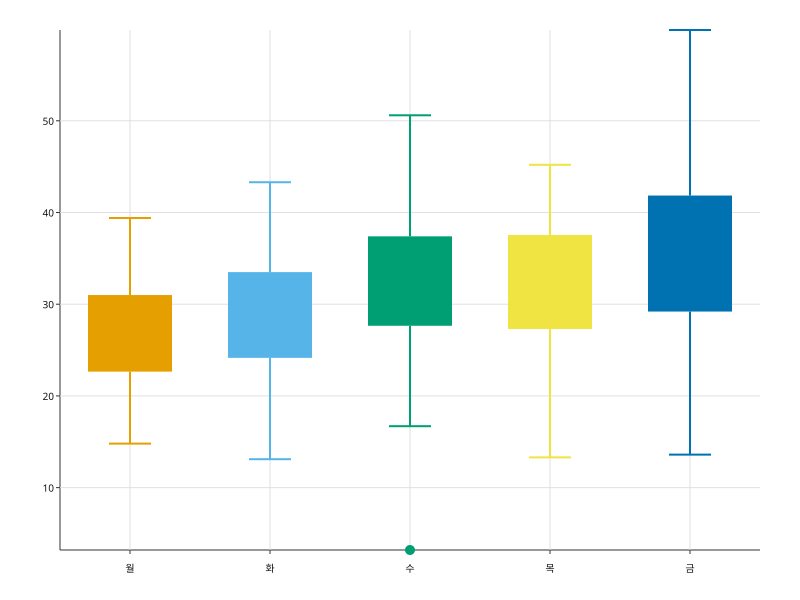
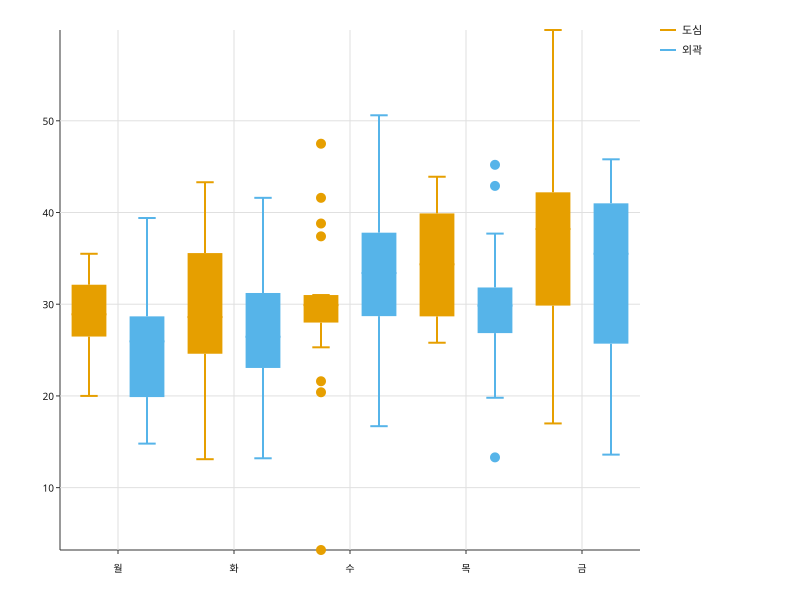

카테고리마다 사분위 상자와 수염을 그린다. mode= 가 수염의 끝을 무엇으로 정할지 고른다.
import random
import svgplot as sp
_rng = random.Random(3)
_days = ["월", "화", "수", "목", "금"]
DELIVERY = {
"요일": [day for day in _days for _ in range(40)],
"분": [round(_rng.gauss(28 + index * 2, 6 + index), 1) for index in range(5) for _ in range(40)],
"지역": [("도심" if _rng.random() < 0.5 else "외곽") for _ in range(200)],
}sp.boxplot(DELIVERY, x="요일", y="분")sp.boxplot(DELIVERY, x="요일", y="분", mode="extremes")
sp.boxplot(DELIVERY, x="요일", y="분", mode="tukey")
sp.boxplot(DELIVERY, x="요일", y="분", hue="지역")